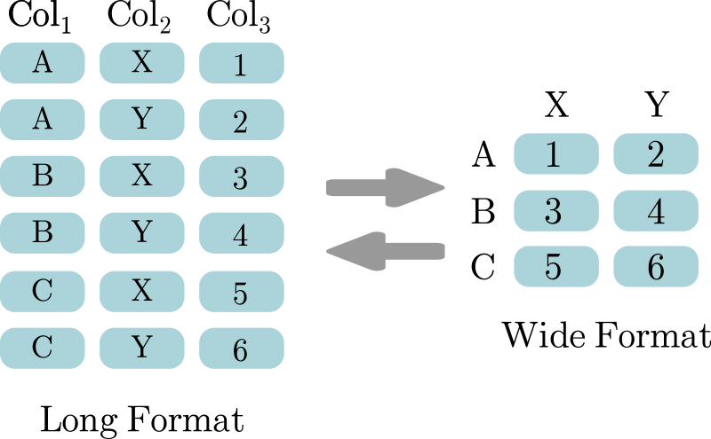

DataFrame#
DataFrame es una clase de pandas que podría interpretarse como un array bidimensional con etiquetas para identificar tanto a las filas como a las columnas, los elementos de cada columna deben de ser del mismo tipo, pero las columnas pueden ser de diferentes tipos. Los DataFrame tiene dos tipos de índices:
índice implícito: Es un índice númerico, que comienza desde cero, similiar a los índices de las secuencias.
índice explícito: Es el objeto
Indexasociado, que puede tener etiquetasintostr.
Algunas características de los DataFrame son:
Los
DataFramese podrían considerar como secuencias bidimensionales. Generalmente las columnas representan variables y las filas representan observaciones.Sirven para almacenar múltiples valores de diferentes tipos en un un solo objeto. El almacenamiento se hace de una manera similar a como se haría en una tabla, es decir, por filas y columnas. Cada columna es un
Series.Es mutable: Sus elementos se pueden modificar.
Está indexado: Cada elemento está asociado con un índice y por lo tanto sus elementos están ordenados. Además sus elementos también se pueden identificar por medio de una etiqueta.
Es un iterable: Se puede iterar por sus elementos y se puede usar la palabra reservada
inpara verificar memebresía, pero la verificación se hará sobre el índice y no sobre los valores.Se puede apilar con otros
DataFrame.
Creación de DataFrame#
La forma más sencilla de crear un objeto DataFrame es con el constructor.
Método |
Descripción |
|---|---|
pandas.DataFrame([data, index, columns, dtype, copy]) |
Objeto bidimensional con columnas potencialmente heterogéneas para datos tabulares. |
Notas:
data: Es un objeto que contiene los datos, se puede definir de diversas formas:
dict: Los keys serán las etiquetas de las columnas y los values pueden serSeries,array-likeolist, todos de la misma longitud, serán los valores de las filas en sus respectivas columnas. De esta forma se llena columna por columna.array-like: Cada elemento interno será una fila, por lo que todos los elementos deben de tener la misma longitud. De esta forma se llena fila por fila. Si se difine el parámetro columns debe tener la misma logitud que las listas internas y si se define el parámetro index debe de tener la misma longitud que la lista externa.dictdedict: Se interpreta como que los outer keys son las etiquetas de las columnas y los inner keys son las etiquetas de las filas y los inner values son los valores delDataFrame.listdedict: Los keys serán las etiquetas de las columnas y los values son los valores de una fila, cadadictrepresente una fila y por lo tanto los keys de todos los diccionarios deben de ser los mismos, en caso de que haya keys que no se comparten tendrán valoresNaN.
index: Es un
array-likeo un objetoIndexcon las etiquetas de las filas. Normalmente debe ser de la misma longitud que data.columns: Es un
array-likeo un objetoIndexcon las etiquetas de las columnas.
Note
Para otras opciones de construir DataFrame revisar los métodos de Construcción.
Ejemplo: A continuación se crea un objeto DataFrame que tiene la información de algunos estados de Estados Unidos, como su capital, población y área. Notar que los nombres de los estados son el índice explícito del df.
# Importar librería
import pandas as pd
# Crear diccionario con los datos
data={
'Capital': ['Sacramento', 'Austin', 'Tallahassee', 'Albany'],
'Population': [39.24, 29.5, 21.96, 20.2],
'Area (km2)': [423970, 695662, 170451, 122283]
}
# Crer df, aquí se indica el 'index'
df=pd.DataFrame(data, index=['California', 'Texas', 'Florida', 'New York'])
# Imprimir el df
print(df)
Capital Population Area (km2)
California Sacramento 39.24 423970
Texas Austin 29.50 695662
Florida Tallahassee 21.96 170451
New York Albany 20.20 122283
Selección de elementos#
Existen diversos métodos para seleccionar elementos en un DataFrame. Aquí se explicarán los más comunes. Todos los ejemplos de esta sección utilizará el df definido en la sección anterior.
Notación con corchetes#
Al ser los DataFrame estructuras bidimensionales es posible seleccionar filas o columnas. Esto se puede hacer con los índices explícitos.
Caution
El uso de los índices implícitos con esta notación está desaconsejado (excepto slices sobre las filas), para ello se recomienda usar el método .iloc[].
Indexing: Seleccionar columnas concretas usando las etiquetas de las columnas.
Columnas completas -
Series: Para seleccionar una columna y retornarSeries, utilizar corchetes y el nombre de la columna. También se puede utilizar la notación punto., en este caso la etiqueta no debe tener espacios, ni caracteres especiales, ni ser una palabra reservada:
X['label']
X.label
Slicing: Seleccionar slices sobre las filas indicando su índice implícito.
Filas completas -
DataFrame: Retorna slices de filas para todas las columnas:
X[start:stop:step]
Fancy indexing: Seleccionar un conjunto de columnas con base a las etiquetas.
Columnas completas -
DataFrame: Para seleccionar una columna y retornarDataFrame, utilizar dobles corchetes y el nombre de la columna:
X[['label']]Múltiples columnas -
DataFrame: Para seleccionar múltiples columnas y retornarDataFrame, utilizar dobles corchetes y los nombres de las columnas. Las etiquetas se pueden poner en cualquier orden e incluso se pueden repetir múltiples veces:
X[['label1', 'label2', ...]]
Boolean masking: Selección de filas para todas las columnas, con base a una secuencia booleana denominada mask.
Mask en filas -
Series: Retorna los elementos que satisfacen el mask en el eje cero. Normalmente el mask se crea usando una columna delDataFramey Operadores de comparación:
X[mask]
Tip
Se pueden usar los operadores Bitwise para crear mask más complejos:
X[(mask1) & (mask2)] # Ejemplo con '&'
Notar que cada mask se pone entre paréntesis.
No usar los operadores lógicos para conformar masks más complicados.
Ejemplos: A continuación se ejemplifica la selección de elementos con las diversas estategias en notación con conchetes en un DataFrame.
# Indexing: Seleccionar columna 'Population'
print(df['Population'], end="\n"*2)
# Fancy indexing: Seleccionar columna Population' y retornar DataFrame
print(df[['Population']], end="\n"*2)
# Fancy indexing: Seleccionar columnas 'Capital', 'Area (km2)' y 'Capital'
print(df[['Capital', 'Area (km2)', 'Capital']], end="\n"*2)
# Boolean masking: Seleccionar elementos que tenga una area mayor a 300,000
print(df[df['Area (km2)']>300000])
California 39.24
Texas 29.50
Florida 21.96
New York 20.20
Name: Population, dtype: float64
Population
California 39.24
Texas 29.50
Florida 21.96
New York 20.20
Capital Area (km2) Capital
California Sacramento 423970 Sacramento
Texas Austin 695662 Austin
Florida Tallahassee 170451 Tallahassee
New York Albany 122283 Albany
Capital Population Area (km2)
California Sacramento 39.24 423970
Texas Austin 29.50 695662
Usando método .loc[]#
El método .iloc[] es útil para seleccionar elementos con base al índice explícito.
Attention
En esta sección tener en cuenta las siguientes nomenclaturas:
‘ind’: Se refiere a una etiqueta del índice.
‘col’: Se refiere a una etiqueta de las columnas.
'indi':'indj': Se refiere a un slice, entre las etiquetas del índice ‘indi’ e ‘indj’'coli':'colj': Se refiere a un slice, entre las etiquetas de las columnas ‘coli’ y ‘colj’'ind1', 'ind2', ...: Se refiere a varias etiquetas del índice.'col1', 'col2', ...: Se refiere a varias etiquetas de las columnas.
Indexing: Útil para seleccionar elementos específicos.
Elemento específico -
object: Retorna el elemento en las etiquetas ‘ind’ y ‘col’:
X.loc['ind', 'col']
Slicing: Útil para seleccionar slices utilizando
start:stop:step, tanto de filas como de columnas. Ambos extremos son inclusivos. Se separan los slicers para las filas y las columnas con una coma.Slices de filas -
DataFrame: Retorna slices de filas para todas las columnas:
X.loc['indi':'indj', :]
X.loc['indi':'indj']Slices de columnas -
DataFrame: Retorna slices de columnas para todas las filas:
X.loc[:, 'coli':'colj']Slices de filas y columnas -
DataFrame: Retorna slices de filas y columnas específicas:
X.loc['indi':'indj', 'coli':'colj']
Fancy indexing: Útil para seleccionar combinaciones de filas y columnas específicas. Los índices se pueden poner en cualquier orden e incluso se puedo poner más de una vez.
Combinación de filas y columnas -
DataFrame: Retorna las filas y columnas en las etiquetas indicadas:
X.loc[['ind1', 'ind2', ...], ['col1', 'col2', ...]
Boolean masking: Útil para seleccionar filas y/o columnas con base a masks. Importante: Asegurarse que el tamaño del mask coincide con el tamaño del eje donde se va a aplicar.
Mask en filas y columnas -
DataFrame: Retorna los elementos que satisfacen ambos masks:
X.loc[row_mask, col_mask]
Combinación de estrategias: Aquí se presentan algunas opciones de combinación de estrategias para las filas y columnas que permiten mayor versatibilidad para seleccionar elementos. Importante: Esta no es una lista extensiva, en general se puede aplicar cualquier estrategia para selección de elementos de manera independiente tanto para las filas, como para las columnas.
Filas completas -
Series: Retorna la fila completa con la etiqueta ‘ind’ comoSeries:
X.loc['ind']
X.loc['ind', :]Filas completas -
DataFrame: Retorna la fila completa con la etiqueta ‘ind’ comoDataFrame:
X.loc[['ind']]
X.loc[['ind'], :]Múltiples filas completas -
DataFrame: Retorna las filas completas con los índices indicados:
X.loc[['ind1', 'ind2', ...]]
X.loc[['ind1', 'ind2', ...], :]Columna completa -
Series: Retorna la columna completa con la etiqueta ‘col’ comoSeries:
X.loc[:, 'col']Columna completa -
DataFrame: Retorna la columna completa con la etiqueta ‘col’ comoDataFrame:
X.loc[:, ['col']]Múltiples columnas completas -
DataFrame: Retorna las columnas completas en los índices indicados:
X.loc[:, ['col1', 'col2', ...]]Mask en filas -
DataFrame: Retorna las filas que satisfacen un mask. Asegurarse que el mask esté conformado por valores booleanos y no por 1s y 0s:
X.loc[row_mask, :]Mask en columnas -
DataFrame: Retorna las columnas que satisfacen un mask. Asegurarse que el mask esté conformado por valores booleanos y no por 1s y 0s:
X.iloc[:, col_mask]
Ejemplos: A continuación se ejemplifica la selección de elementos con las diversas estategias con el método .loc[] en un DataFrame.
# Indexing: Elemento específico
print(df.loc['California', 'Population'], end="\n"*2)
# Slicing: Rango de filas
print(df.loc['California':'Texas', :], end="\n"*2)
# Boolean masking: Mask en ambos ejes
print(df.loc[df['Area (km2)']>300000, df.columns.isin(['Capital', 'Area (km2)'])], end="\n"*2)
# Combinación de estrategias: Boolean masking y fancy indexing
print(df.loc[df['Area (km2)']>300000, ['Capital', 'Population']])
39.24
Capital Population Area (km2)
California Sacramento 39.24 423970
Texas Austin 29.50 695662
Capital Area (km2)
California Sacramento 423970
Texas Austin 695662
Capital Population
California Sacramento 39.24
Texas Austin 29.50
Usando método .iloc[]#
El método .iloc[] es útil para seleccionar elementos con base al índice implícito.
Indexing: Útil para seleccionar elementos específicos:
Elemento específico -
object: Retorna el elemento en índice i y la columna j comoscalar, los índices empiezan en cero:
X.iloc[i, j]
Slicing: Útil para seleccionar slices tanto de filas como de columnas. Se separan los slicers para las filas y las columnas con una coma.
Slices de filas -
DataFrame: Retorna filas completas para todas las columnas:
X.iloc[start:stop:step]
X.iloc[start:stop:step, :]Slices de columnas -
DataFrame: Retorna columnas completas para todas las filas:
X.iloc[:, start:stop:step]Slices de filas y columnas -
DataFrame: Retorna slices de filas y columnas específicas:
X.iloc[start:stop:step, start:stop:step]
Fancy indexing: Útil para seleccionar combinaciones de filas y columnas específicas. Los índices se pueden poner en culquier orden e incluso se puedo poner más de una vez. Las filas y columnas se separan por coma.
Combinación de filas y columnas -
DataFrame: Retorna las filas y columnas completas en los índices indicados:
X.iloc[[i1, i2, ...], [j1, j2, ...]
Combinación de estrategias: Aquí se presentan algunas opciones de combinación de estrategias para las filas y columnas que permiten mayor versatibilidad para seleccionar elementos, particularmente columnas. Importante. Esta no es una lista extensiva, en general se puede aplicar cualquier estrategia para selección de elementos (excepto masking), de manera independiente tanto para las filas, como para las columnas.
Filas completas -
Series: Retorna la fila completa en el índice i comoSeries, los índices empiezan en cero:
X.iloc[i]
X.iloc[i, :]Filas completas -
DataFrame: Retorna la fila completa en el índice i comoDataFrame, los índices empiezan en cero:
X.iloc[[i]]
X.iloc[[i], :]Múltiples filas completas -
DataFrame: Retorna las filas completa en los índices indicados:
X.iloc[[i1, i2, ...]]
X.iloc[[i1, i2, ...], :]Columna completa -
Series: Retorna la columna completa en el índice j comoSeries:
X.iloc[: , j]Columna completa -
DataFrame: Retorna la columna completa en el índice j comoDataFrame:
X.iloc[: , [j]]Múltiples columnas completa -
DataFrame: Retorna las columnas completas en los índices indicados:
X.iloc[: , [j1, j2, ...]]Mask en columnas -
DataFrame: Retorna las columnas especificadas por un mask para una fila determinada. Asegurarse que el mask esté conformado por valores booleanos y no por 1s y 0s:
X.iloc[i, mask]
Ejemplos: A continuación se ejemplifica la selección de elementos con las diversas estategias con el método .iloc[] en un DataFrame.
# Indexing: Elemento específico
print(df.iloc[1, 1], end="\n"*2)
# Slicing
print(df.iloc[::2, ::-1], end="\n"*2)
# Fancy indexing
print(df.iloc[[0, 3, 1, 2], [0, 1, 0]], end="\n"*2)
# Combinación de estrategias: Fancy indexing y slicing
print(df.iloc[[1, 2, 0], ::2], end="\n"*2)
29.5
Area (km2) Population Capital
California 423970 39.24 Sacramento
Florida 170451 21.96 Tallahassee
Capital Population Capital
California Sacramento 39.24 Sacramento
New York Albany 20.20 Albany
Texas Austin 29.50 Austin
Florida Tallahassee 21.96 Tallahassee
Capital Area (km2)
Texas Austin 695662
Florida Tallahassee 170451
California Sacramento 423970
Exploración básica#
Para explorar el contenido de un DataFrame se puede hacer uso de varios métodos.
.describe(): Genera estadísticas para cada una de las columnas..head(n=5): Imprime las primeras n filas delDataFrame..info(): Imprime información delDataFramecomo número total de filas y columnas, nombre y tipo de cada una de las columnas, tipo de índice y rango del índice, resumen de los tipos de datos de las columnas..tail(n=5): Imprime las útlimas n filas delDataFrame.
Note
Existen varios atributos que retornan información relevante, para más información visitar Atributos.
Agregar columna#
Para agregar una columna nueva simplemente asignar los valores a una etiqueta nueva.
# Agregar nueva columna
X['label']=Y
X -
DataFrame.‘label’ será el nombre de la columna.
Y-Series,array-like,secuencia: Asegurarse que el tamaño de este objeto coincida con el tamaño en el eje 0 delDataFrameIMPORTANTE: No se puede usar la notación
X.label=Y.
Modificar valores#
Se pueden acceder a determinados elementos con cualquier método de Selección de elementos y asignarle un nuevo valor.
Warning
Al asignar elementos asegurarse que los tipos coincidan con los tipos de las columnas donde se modificarán los valores o al menos que sea posible forzar la conversión.
# Modificar elementos específicos
df.loc['ind', 'col']=val
df.iloc[i, j]=val
# Múltiples valores con mismo valor (ejemplo con slicing)
df.loc[:, ['col']]=val
# Múltiples valores con diferentes valores (ejemplo con slicing)
df.loc[:, ['col']]=[val1, val2, ...]
Notas:
Un elemento específico: Seleccionar el elemento por cualquier estrategia de selección y asigarle un nuevo valor.
Múltiples con un mismo valor: Seleccionar los elementos por cualquier estrategia de selección y asignarles un
scalar.Múltiples elementos con valores diferentes: Seleccionar los elementos por cualquier estrategia de selección y asignarles un
array-likedel mismo shape que el objeto retornado por la selección.
Eliminar una columna#
Se puede usar la palabra reservada del para eliminar columnas completas:
# Eliminar la columna 'label'
del df['label']
Iteración#
Para iterar sobre las columnas o filas usar las siguientes opciones:
# Iteración por las etiquetas de las columnas
for col in df:
# for body
# Iteración por las filas
for index, data in df.iterrows():
# for body
# Iteración por las filas como namedtuple
for row in df.itertuples():
# for body
col tendrá los labels de las columnas de
DataFrame.index será el índice de la fila en la iteración.
data será un
Series, que contendrá la información de todas las columnas para cada fila en la iteración, el índice de data será el nombre de la columna de df. Se puede aplicar cualquier método de selección de elementos deSeriesen data.row será un Named tuple.
Note
Para más opciones de iteración o más información revisar los métodos en la sección de Selección, filtrado e iteración de elementos, particularmente los métodos:
.__iter__: Retornaiteratorde las etiquetas de las columnas delDataFrame..items: Retorna uniterablede tuplas (col_label, series)..iterrows: Retorna uniterablede tuplas (ind_label, series)..itertuples: Retorna uniterabledenamedtuple(sobre las filas) cuyos nombres serán las etiquetas de las columnas y más aparte del nombre Index que hace referencia a la etiqueta del índice en la fila.
Uniones y apilaciones#
Para unir objetos de pandas, ya sea apilando los objetos o en una operación similar a un join de SQL, revisar los siguientes funciones de pandas o métodos:
DataFrame.join(): Permite unir columnas de objetos depandascon base a valores de columnas o de los índices de una manera similar a un join de SQL.DataFrame.merge(): Permite unir columnas de objetos depandascon base a valores de columnas o de los índices de una manera similar a un join de SQL. Permite más flexibilidad queDataFrame.join().pd.concat(): Concatena objetos sobre un eje existe, resultando en un objeto con el mismo número de dimensiones que los objetos originales. Se puede indicar si el index se debe de reiniciar o indicar a que objeto pertenecía cada fila.pd.merge(): Permite unir objetos depandascon base a valores de columnas o de los índices de una manera similar a un join de SQL.
Note
Para más información visitar Funciones de uniones y apilaciones y Métodos de unión.
Pivot y unpivot#
En datos tabulares existen dos formatos principales:
Long format: También denominada unpivot, cada columna en la tabla representa una variable en los datos. Por lo tanto, los mismos valores se pueden repetir en múltiples filas y existe una o más columnas de valores.
Wide format: También denominada pivot, distribuye los valores de una o mas variables categóricas a lo largo de las columnas, se establece un “índice” con los valores únicos de una columna categórica o las combinaciones únicas de dos más columnas categóricas y la columna de valores pasa a ser los valores/cálculos de las mismas. Además es posible añadir totales para filas y columnas.
{kind=link}

Fig. 5 Visualización de wide y long format.#
Los objetos DataFrame tiene algunos métodos para cambiar de un formato a otro:
melt(): Sirve para pasar de un wide format a long format.pivot(): Permite pasar de long format a wide format, no soporta aggregates en los valores ni el calculo de subtotales y/o totales.pivot_table(): Permite pasar de long format a wide format, soporta aggregates en los valores y permite el calculo de totales.
Note
Para más información de estos métodos visitar Métodos de pivot y unpivot
Ejemplos:
# Definir DataFrame
long=pd.DataFrame({'col1': ['A', 'A', 'B', 'B', 'C', 'C'],
'col2': ['X', 'Y']*3,
'col3': [*range(1, 7)]})
print("DataFrame:", long, sep='\n', end='\n'*2)
# Pivot
pivot=long.pivot(columns='col2', index='col1', values='col3')
print("Pivot:", pivot, sep='\n', end='\n'*2)
# Unpivot
unpivot=pivot.reset_index().melt(id_vars='col1', var_name='col2', value_name='col3')
print("Unpivot:", unpivot, sep='\n', end='\n'*2)
# Pivot con totales
wide=long.pivot_table(values='col3', index='col1', columns='col2', aggfunc='sum', margins=True)
print("Pivot con totales:", wide, sep='\n')
DataFrame:
col1 col2 col3
0 A X 1
1 A Y 2
2 B X 3
3 B Y 4
4 C X 5
5 C Y 6
Pivot:
col2 X Y
col1
A 1 2
B 3 4
C 5 6
Unpivot:
col1 col2 col3
0 A X 1
1 B X 3
2 C X 5
3 A Y 2
4 B Y 4
5 C Y 6
Pivot con totales:
col2 X Y All
col1
A 1 2 3
B 3 4 7
C 5 6 11
All 9 12 21
Atributos#
Atributos del objeto DataFrame.
Atributo |
Descripción |
|---|---|
Retorna un |
|
Las etiquetas de las columnas del |
|
Retorna los tipos de datos de cada columna en el |
|
Indica si el objeto está vacío. |
|
El índice (etiquetas de fila) del |
|
Retorna un |
|
Retorna un |
|
Retorna un |
|
Retorna una representación ndarray de los valores del |
Métodos#
Atributos del objeto DataFrame.
Construcción#
Métodos para construir objetos DataFrame desde otros objetos.
Método |
Descripción |
|---|---|
DataFrame.from_dict(data[, orient, dtype, …]) |
Contruye un |
DataFrame.from_records(data[, index, …]) |
Contruye un |
Conversión y copias#
Métodos para convertir el objeto DataFrame a algún otro tipo o crear un copia.
Método |
Descripción |
|---|---|
DataFrame.astype(dtype[, copy, errors]) |
Convierte los datos a otro tipo de dato. |
DataFrame.convert_dtypes([infer_objects, …]) |
Convierte las columnas a los mejores tipos |
DataFrame.copy([deep]) |
Crea una copia del objeto. |
DataFrame.infer_objects([copy]) |
Intenta inferir los mejores tipos de columnas del objeto. |
DataFrame.squeeze([axis]) |
Convierte ejes de 1 dimensión en un |
DataFrame.to_dict([orient, into, index]) |
Convierte el |
Patrones útiles:
# Convertir una columna a float
df['num_col']=df['num_col'].astype('float')
# Convertir a categórica
cats=df['col'].unique()
df['col']=df['col'].astype('category', ordered=True, categories=cats)
IO y Serialización#
Métodos para exportar el DataFrame en un formato específico o serializar el mismo.
Método |
Descripción |
|---|---|
DataFrame.to_clipboard(*[, excel, sep]) |
Copia el objeto al portapapeles del sistema. |
DataFrame.to_csv([path_or_buf, sep, na_rep, …]) |
Escribe el objeto en un archivo de valores separados por comas (csv). |
DataFrame.to_excel(excel_writer, *[, …]) |
Escribe objeto en una hoja de Excel. EJEMPLO |
DataFrame.to_feather(path, **kwargs) |
Escribe un |
DataFrame.to_hdf(path_or_buf, *, key[, …]) |
Escribe los datos contenidos en un archivo HDF5 usando HDFStore. |
DataFrame.to_html([buf, columns, col_space, …]) |
Retorna un |
DataFrame.to_json([path_or_buf, orient, …]) |
Convierte el objeto en una cadena JSON como |
DataFrame.to_latex([buf, columns, header, …]) |
Escribe el objeto como una tabla tabular de LaTeX como |
DataFrame.to_markdown([buf, mode, index, …]) |
Escribe el |
DataFrame.to_orc([path, engine, index, …]) |
Escribe un |
DataFrame.to_parquet([path, engine, …]) |
Escribe un |
DataFrame.to_pickle(path, *[, compression, …]) |
Serializa el objeto en un pickle. |
DataFrame.to_records([index, column_dtypes, …]) |
Convierte |
DataFrame.to_sql(name, con, *[, schema, …]) |
Escribe los registros almacenados en un |
DataFrame.to_stata(path, *[, convert_dates, …]) |
Exporta el |
DataFrame.to_string([buf, columns, …]) |
Renderiza un |
Retorna un objeto |
Patrones útiles:
# Exportar a excel
df.to_excel(excel_writer='path/to/file.xls', sheet_name='sheet_name'[,startrow, startcol])
# Exportar a múltiples hojas
with pd.ExcelWriter('path/to/file.xlsx') as writer:
df.to_excel(excel_writer=writer, sheet_name='sheet_name'[,startrow, startcol])
df2.to_excel(excel_writer=writer, sheet_name='sheet_name2'[,startrow, startcol])
...
Cálculos y operadores#
Métodos para realizar cálculos con el DataFrame o métodos equivalentes a operadores de Python.
Aggregates#
Métodos para calcular aggregates, en esencia calculan un único número de resumen para algún eje del DataFrame. En esta categoría se enlistan todos los métodos que cumplen esa descripción, pero los mismos métodos se podrán encontrar en otras categorías.
Note
Estos métodos ignoran valores NA/NaN, a menos de que se indique lo contrario.
Método |
Descripción |
|---|---|
DataFrame.agg([func, axis]) |
Agrega usando una o más operaciones sobre el eje especificado. |
DataFrame.aggregate([func, axis]) |
Agrega usando una o más operaciones sobre el eje especificado. |
DataFrame.all([axis, bool_only, skipna]) |
Retorna |
DataFrame.any(*[, axis, bool_only, skipna]) |
Retorna |
DataFrame.corr([method, min_periods, …]) |
Calcula la correlación por pares de columnas, excluyendo |
DataFrame.corrwith(other[, axis, drop, …]) |
Calcula la correlación por pares con otro objeto. |
DataFrame.count([axis, numeric_only]) |
Retorna el conteo de los valores no nulos sobre el eje indicado. |
DataFrame.cov([min_periods, ddof, numeric_only]) |
Calcula la covarianza por pares de columnas, excluyendo |
DataFrame.describe([percentiles, include, …]) |
Genera estadísticas descriptivas de los datos por columnas. |
DataFrame.kurt([axis, skipna, numeric_only]) |
Retorna curtosis sobre el eje solicitado. |
DataFrame.kurtosis([axis, skipna, numeric_only]) |
Retorna curtosis sobre el eje solicitado. |
DataFrame.mean([axis, skipna, numeric_only]) |
Retorna la media de los valores sobre el eje indicado. |
DataFrame.median([axis, skipna, numeric_only]) |
Retorna la mediana de los valores sobre el eje indicado. |
DataFrame.mode([axis, numeric_only, dropna]) |
Recupera la moda a lo largo del eje indicado. |
DataFrame.prod([axis, skipna, numeric_only, …]) |
Retorna el producto de los valores sobre el eje indicado. |
DataFrame.product([axis, skipna, …]) |
Retorna el producto de los valores sobre el eje indicado. |
DataFrame.sample([n, frac, replace, …]) |
Retorna una muestra aleatoria de elementos de un eje del objeto. |
DataFrame.sem([axis, skipna, ddof, numeric_only]) |
Retorna el error estándar de la media sobre el eje indicado. |
DataFrame.skew([axis, skipna, numeric_only]) |
Retorna el sesgo sobre el eje indicado. |
DataFrame.std([axis, skipna, ddof, numeric_only]) |
Retorna la desviación estándar de la muestra sobre el eje indicado. |
DataFrame.sum([axis, skipna, numeric_only, …]) |
Retorna la suma de los valores sobre el eje indicado. |
DataFrame.var([axis, skipna, ddof, numeric_only]) |
Retorna la varianza sobre el eje indicado. |
Notas de aggregate#
Aplica cálculos a los valores de un DataFrame sobre el eje indicado. Es lo mismo que .agg().
DataFrame.agg(func=None, axis=0)
Parámetros:
func -
function,str,list,dict: La función de agregación.function: Una función.Las funciones de
numpyse pueden usar, por ejemplonp.mean.Se puede especificar una función personaliza o una lambda function, pero tener en cuenta que la función debe de recibir un
Seriesy retornar un escalar.
str: El nombre de una función de agregación. Los nombres válidos son: ‘sum’, ‘prod’, ‘mean’, ‘median’, ‘min’, ‘max’, ‘std’, ‘var’, ‘sem’, ‘count’, ‘nunique’, ‘size’, ‘first’, ‘last’, ‘quantile’, ‘mad’, ‘skew’, ‘kurt’.list: Si se quiere aplicar más de una función utilizar una lista de funciones o nombres de funciones.dict: Se puede especificar una función específica a cada columna con un diccionario, donde las keys son las etiquetas de las columnas y los value son las funciones de agregación, también se puede usar unlistde funciones como value si se desea aplicar más de una función.
axis - {0 o ‘index’, 1 o ‘columns’}: Eje sobre el cual realizar la operación.
Patrones útiles:
# Calcular función personalizada
def iqr(column):
return column.quantile(0.75) - column.quantile(0.25)
df['col_name'].agg(iqr)
# Calcular aggregate en mútiples columnas
df[['col1_name', 'col2_name', ...]].agg(iqr)
# Calcular mútiples aggregates en una columna
df['col_name'].agg([iqr, agg_func2, ...])
# Calcular múltiples aggregate en mútiples columnas
df[['col1_name', 'col2_name', ...]].agg([iqr, agg_func2, ...])
# Calcular aggregates diferentes por columna
df[['col1_name', 'col2_name', ...]].agg({'col1_name': iqr,
'col2_name': agg_func2,
...})
Booleanos#
Métodos para trabajar con DataFrame que contienen valores bool.
Note
Estos métodos ignoran valores NA/NaN, a menos de que se indique lo contrario.
Método |
Descripción |
|---|---|
DataFrame.all([axis, bool_only, skipna]) |
Retorna |
DataFrame.any(*[, axis, bool_only, skipna]) |
Retorna |
Cálculos acumulados, diferencias, cambios porcentuales y rank#
Métodos para calcular productos o sumas acumuladas, también cálculo de diferencias y cambios porcentuales con desfases y rankings.
Note
Estos métodos ignoran valores NA/NaN, a menos de que se indique lo contrario.
Método |
Descripción |
|---|---|
DataFrame.cummax([axis, skipna]) |
Para cada elemento en el eje determina el valor máximo hasta ese elemento. |
DataFrame.cummin([axis, skipna]) |
Para cada elemento en el eje determina el valor mínimo hasta ese elemento. |
DataFrame.cumprod([axis, skipna]) |
Para cada elemento en el eje determina el producto acumulado hasta ese elemento. |
DataFrame.cumsum([axis, skipna]) |
Para cada elemento en el eje determina la suma acumulada hasta ese elemento. |
DataFrame.diff([periods, axis]) |
Para cada elemento en un eje calcula la diferencia de elementos con cierto desfase |
DataFrame.pct_change([periods, fill_method, …]) |
Para cada fila calcula el cambio porcentual entre el elemento actual y el anterior. |
DataFrame.rank([axis, method, numeric_only, …]) |
Calcula los rangos de datos numéricos (1 a n) a lo largo del eje. |
Estadísticas#
Métodos para el cálculo de estadísticas descriptivas, generar muestras aleatorias o calcular correlaciones y covarianzas entre dos variables.
Note
Estos métodos ignoran valores NA/NaN, a menos de que se indique lo contrario.
Método |
Descripción |
|---|---|
DataFrame.corr([method, min_periods, …]) |
Calcula la correlación por pares de columnas, excluyendo |
DataFrame.corrwith(other[, axis, drop, …]) |
Calcula la correlación por pares con otro objeto. |
DataFrame.cov([min_periods, ddof, numeric_only]) |
Calcula la covarianza por pares de columnas, excluyendo |
DataFrame.describe([percentiles, include, …]) |
Genera estadísticas descriptivas de los datos por columnas. |
DataFrame.kurt([axis, skipna, numeric_only]) |
Retorna curtosis sobre el eje solicitado. |
DataFrame.kurtosis([axis, skipna, numeric_only]) |
Retorna curtosis sobre el eje solicitado. |
DataFrame.mean([axis, skipna, numeric_only]) |
Retorna la media de los valores sobre el eje indicado. |
DataFrame.median([axis, skipna, numeric_only]) |
Retorna la mediana de los valores sobre el eje indicado. |
DataFrame.mode([axis, numeric_only, dropna]) |
Recupera la moda a lo largo del eje indicado. |
DataFrame.sample([n, frac, replace, …]) |
Retorna una muestra aleatoria de elementos de un eje del objeto. |
DataFrame.sem([axis, skipna, ddof, numeric_only]) |
Retorna el error estándar de la media sobre el eje indicado. |
DataFrame.skew([axis, skipna, numeric_only]) |
Retorna el sesgo sobre el eje indicado. |
DataFrame.std([axis, skipna, ddof, numeric_only]) |
Retorna la desviación estándar de la muestra sobre el eje indicado. |
DataFrame.var([axis, skipna, ddof, numeric_only]) |
Retorna la varianza sobre el eje indicado. |
Estadísticos de orden#
Métodos útiles para trabajar con los valores numéricos ordenados, y algunos estadísticos destacados como mínimos, máximos, medianas y cuantiles.
Note
Estos métodos ignoran valores NA/NaN, a menos de que se indique lo contrario.
Método |
Descripción |
|---|---|
DataFrame.idxmax([axis, skipna, numeric_only]) |
Retorna la etiqueta del valor máximo sobre el eje indicado. |
DataFrame.idxmin([axis, skipna, numeric_only]) |
Retorna la etiqueta del valor mínimo sobre el eje indicado. |
DataFrame.nlargest(n, columns[, keep]) |
Retorna los n elementos más grandes. por columnas en orden descendente. |
DataFrame.nsmallest(n, columns[, keep]) |
Retorna los n elementos más pequeños por columnas en orden ascendente. |
DataFrame.max([axis, skipna, numeric_only]) |
Retorna el máximo de los valores sobre el eje indicado. |
DataFrame.min([axis, skipna, numeric_only]) |
Retorna el mínimo de los valores sobre el eje indicado. |
DataFrame.quantile([q, axis, numeric_only, …]) |
Retorna el cuantil dado de los valores sobre el eje indicado. q es un valor entre cero y uno. |
Misceláneos#
Otros métodos de naturaleza numérica.
Método |
Descripción |
|---|---|
Retorna un |
Operadores aritméticos y similares.#
Métodos para realizar operaciones binarias con operadores aritméticos y sus equivalentes que tienen por sufijo una r útiles para intercambiar las posiciones del DataFrame y del argumento other.
Método |
Descripción |
|---|---|
DataFrame.add(other[, axis, level, fill_value]) |
Retorna la suma del |
DataFrame.div(other[, axis, level, fill_value]) |
Retornar la división flotante del |
DataFrame.dot(other) |
Calcula el producto escalar entre |
DataFrame.eval(expr, *[, inplace]) |
Evalua una cadena que describe operaciones en las columnas de un |
DataFrame.floordiv(other[, axis, level, …]) |
Retornar la división entera del |
DataFrame.mod(other[, axis, level, fill_value]) |
Retornar el módulo de la división del |
DataFrame.mul(other[, axis, level, fill_value]) |
Retornar la multiplicación del |
DataFrame.pow(other[, axis, level, fill_value]) |
Retornar la potenciación del |
DataFrame.radd(other[, axis, level, fill_value]) |
Retorna la suma del |
DataFrame.rdiv(other[, axis, level, fill_value]) |
Retornar la división flotante de other y |
DataFrame.rfloordiv(other[, axis, level, …]) |
Retornar la división entera de other y |
DataFrame.rmod(other[, axis, level, fill_value]) |
Retornar el módulo de la división de other y |
DataFrame.rmul(other[, axis, level, fill_value]) |
Retornar la multiplicación del |
DataFrame.rpow(other[, axis, level, fill_value]) |
Retornar la potenciación de other y |
DataFrame.rsub(other[, axis, level, fill_value]) |
Retornar la resta de other y |
DataFrame.rtruediv(other[, axis, level, …]) |
Retornar la división flotante del other y |
DataFrame.sub(other[, axis, level, fill_value]) |
Retornar la resta del |
DataFrame.truediv(other[, axis, level, …]) |
Retornar la división flotante del |
Operadores de comparación y membresía.#
Métodos para comparar los elementos del DataFrame con otro objeto o verificar que los elementos del DataFrame satisfagan ciertas condiciones, como verificar que estén entre un rango o un conjunto de valores concretos.
Método |
Descripción |
|---|---|
DataFrame.eq(other[, axis, level]) |
Indica la igualdad del |
DataFrame.equals(other) |
Verifica si dos objetos contienen los mismos elementos. |
DataFrame.ge(other[, axis, level]) |
Indica si es mayor o igual el |
DataFrame.gt(other[, axis, level]) |
Indica si es mayor el |
DataFrame.isin(values) |
Retorna |
DataFrame.le(other[, axis, level]) |
Indica si es menor o igual el |
DataFrame.lt(other[, axis, level]) |
Indica si es manor el |
DataFrame.ne(other[, axis, level]) |
Indica si no son iguales el |
Series de tiempo#
Métodos útiles para DataFrame que tienen un Index que representa una serie de tiempo (no necesariamente).
Método |
Descripción |
|---|---|
DataFrame.asfreq(freq[, method, how, …]) |
Modifica la frecuencia de una serie de tiempo. El |
DataFrame.asof(where[, subset]) |
Retorna la/s última/s fila/s válida sin incluir |
DataFrame.at_time(time[, asof, axis]) |
Selecciona valores en un momento particular del día (por ejemplo, 9:30 a. m.). |
DataFrame.between_time(start_time, end_time) |
Selecciona valores entre horas particulares del día (por ejemplo, de 9:00 a 9:30 a. m.). |
DataFrame.resample(rule[, axis, closed, …]) |
Modifica la frecuencia de una serie de tiempo, útil si se realizará un aggregate con la nueva frecuencia. El objeto debe de tener un índice |
DataFrame.shift([periods, freq, axis, …]) |
Desplaza el índice según el número deseado de períodos con una frecuencia de tiempo opcional. |
DataFrame.to_period([freq, axis, copy]) |
Convierte el índice del |
DataFrame.to_timestamp([freq, how, axis, copy]) |
Convierte un índice |
DataFrame.tz_convert(tz[, axis, level, copy]) |
Convierte un axis compatible con tz en la zona horaria objetivo. |
DataFrame.tz_localize(tz[, axis, level, …]) |
Localiza el índice tz-naive a la zona horaria de destino. |
Funciones ventana, agrupar, aplicar y mapeos#
Diversos métodos de operaciones como cálculo por ventanas, cálculo de agrupamientos, aplicar funciones a algún eje del DataFrame y mapeos.
Método |
Descripción |
|---|---|
DataFrame.agg([func, axis]) |
Agrega usando una o más operaciones sobre el eje especificado. |
DataFrame.aggregate([func, axis]) |
Agrega usando una o más operaciones sobre el eje especificado. |
DataFrame.apply(func[, axis, raw, …]) |
Aplica una función lo largo de un eje del |
DataFrame.ewm([com, span, halflife, alpha, …]) |
Provee de cálculos ponderados exponencialmente (EW). |
DataFrame.expanding([min_periods, axis, method]) |
A lo largo de un eje del |
DataFrame.groupby([by, axis, level, …]) |
Agrupa el |
DataFrame.map(func[, na_action]) |
Aplica una función a un |
DataFrame.pipe(func, *args, **kwargs) |
Encadena funciones que reciben |
DataFrame.rolling(window[, min_periods, …]) |
Provee calculos en ventanas moviles de datos. Posteriormente se puede aplicar un método del objeto |
DataFrame.transform(func[, axis]) |
Aplica una función |
Patrones útiles:
# Mapear valores de columna categórica por otra
mapping={'cat1':'new_cat1',
'cat2':'new_cat2',
...}
df['new_cat_col']=df['cat_col'].map(mapping)
# Cálculos sobre ventana móvil
df.rolling(window).method()
# Cálculos acumulados
df['col'].expanding().sum() # Equivale a df['col'].cumsum()
Gráficas#
Métodos para gráficar.
Note
Para usar estps métodos es necesario importar a la sesión el módulo matplotlib.pyplot as plt.
Método |
Descripción |
|---|---|
DataFrame.boxplot([column, by, ax, …]) |
Crea un diagrama de caja a partir de |
DataFrame.hist([column, by, grid, …]) |
Crea un histograma de las columnas del DataFrame. |
DataFrame.plot([x, y, kind, ax, ….]) |
Función general para crear gráficas con base a los datos del ´Series´. |
DataFrame.plot.area([x, y, stacked]) |
Gráfica de áreas apiladas. |
DataFrame.plot.bar([x, y]) |
Gráfica de barras verticales. |
DataFrame.plot.barh([x, y]) |
Gráfica de barras horizontales. |
DataFrame.plot.box([by]) |
Gráfica de un diagrama de cajas de las columnas del |
DataFrame.plot.density([bw_method, ind]) |
Genera un gráfico de estimación de densidad. |
DataFrame.plot.hexbin(x, y[, C, …]) |
Genera un gráfico de agrupamiento hexagonal. |
DataFrame.plot.hist([by, bins]) |
Grafica un histograma de las columnas del |
DataFrame.plot.kde([bw_method, ind]) |
Genera un gráfico de estimación de densidad. |
DataFrame.plot.line([x, y]) |
Gráfica de líneas. |
DataFrame.plot.pie(**kwargs) |
Genera un diagrama circular. |
DataFrame.plot.scatter(x, y[, s, c]) |
Crea un diagrama de dispersión. |
Tip
Para personalizar la gráfica se puede usar la interfaz basada en Matalab de matplotlib.
Patrones útiles:
# Líneas
df.plot(x="col1",
y="col2",
kind="line")
# Diagrama de dispersión
df.plot(x="col1",
y="col2",
kind="scatter")
# Histograma
df["col"].hist(bins) # df["col"].plot(kind='hist')
# BoxPlot
s.plot(kind="box") # Un boxplot por columna
# Barras
df["col"].plot(kind="bar")
# Gráficas en un mismo axes (ejm hist)
df["col1"].hist(bins, alpha)
df["col2"].hist(bins, alpha)
# Graficar todas las columnas en subplots
df.plot(subplots=True) # line por default
Notas de plot#
DataFrame.plot(): Crea gráficas con base a los datos de un DataFrame o Series. Por deafult creará una gráfica por cada columna, utilizará los nombres de las mismas para crear una leyenda, utilizará la escala de las mismas para el eje y y el índice para el eje x.
# Sintaxis de llamada
DataFrame.plot(x=None, y=None, kind='line', ax=None, subplots=False, layout=None,
figsize=None, use_index=True, title=None, legend=None, style=None,
xticks=None, yticks=None, xlim=None, ylim=None, xlabel=None, ylabel=None,
stacked=*, secondary_y=False, ax=None, alpha=None, sort_columns=False,
*args, **kwargs)
Parámetros:
x -
labeloint: Es el nombre o el índice de la columna que irá en el eje x. Aplica en kind 2 y 3.y -
labeloint: Es el nombre o el índice de la columna que irá en el eje y. Aplica en kind 2 y 3.kind -
str: es el tipo de gráfico. Otra forma de declarar la gráfica es:X.plot.kind(*args, **kwargs).'bar': Crea una gráfica de barras verticales.'barh': Crea una gráfica de barras horizontales.'line': Crea una gráfica línea. Default.'scatter': Crea una diagrama de dispersión entre 2 variables.'box': Crea un boxplot.'hist': Crea un histograma.'kde': Crea una estimación de la densidad de un Kernel.'density': Crea una estimación de la densidad de un Kernel.'area': Crea una gráfica de un área.'pie': Crea una gráfica de pastel.'hexbin': Crea una gráfica hexbin.
ax -
Axes: El objeto ax de la figura.subplots -
bool: Es para indicar que haga una subgráfica por cada columna, entonces hará cada gráfica en un recuadro diferente en lugar de hacerlo en el mismo. Checar argumentos sharex y sharey, para compartir ejes entre gráficas sisubplots=Truey layout para determinar cuántas filas y columnas de gráficas usar.layout -
2-tupledeint: Filas y columnas para el layout de las subgráficas.figsize -
tupledefloat: Ancho y alto de la figura en pulgadas.useindex -
bool: Para indicar si usar el índice como el eje x.title -
strolist: Es el título que tendrá la gráfica. Si es una lista ysubplots=Truees para indicar los títulos de cada subgráfica.legend -
boolo {‘reverse’}: Mostrar una leyenda.style -
listodict: Tipo de línea de matplotlib por columna. Es similar al parámetro fmt.xticks, yticks -
sequence: Valores a usar en el eje x y y respectivamente.xlim, ylim -
2-tupleo2-list: Establece los límite de los ejes x y y respectivamente.xlabel, ylabel -
label: Etiqueta a usar en el eje x y y respectivamente. Por default enxlabelse usan el nombre del índice o el nombre de la columna del eje x. Enylabelno se pone etiqueta por default o el nombre del eje y para gráficas planas.stacked -
bool: Es para indicar que se apilen las barras. Aplica en ‘line’, ‘bar’ y ‘area’. Por default sonFalse,FalseyTruerespectivamente.bins -
int: Es para especificar la cantidad de barras. Aplica en ‘hist’.secondary_y -
boolosecuencia: Para indicar si debe incluir un eje y secundario con otra escala. Si essequenceponer el/loslabelde la(s) columna(s) con los valores graficar con la otra escala.ax -
Axes: Para indicar en cual axes agregar en caso de un grid de gráficas.alpha -
float 0, 1: Para indicart la transperiencia de las gráficas.sort_columns -
bool: En caso de quesubplots=True, es para indicar que las columnas se ordenen de manera alfabética, en lugar de manter el orden que ya tienen.Otros argumentos útiles (todos opcionales), consultar
help():sharex=True if ax is None else False-bool: Indica si compartir eje x entre las subgráficas.sharey=False-bool: Indica si compartir eje y entre las subgráficas.grid=None-bool: Para indicar si mostrar una malla de líneas en la gráfica.lgx=False-boolo {‘sym’}: Escala log en x.lgy=False-boolo {‘sym’}: ‘ Escala log en y.lglg=False-boolo {‘sym’}: Escala log en x y y.rt=None-int: [0, 360]: Rotación de los ticks.fntsize=None-int: Tamaño de la fuente para los ticks.clrmap=None-str,Clrmap: Colores de la gráfica.include_bl=False-bool: Indica que los valores booleanos puedan ser graficados.yerr,xerr-DataFrame,Series,array-like,dict,str: Para agregar error bars.
Retorna:
AxesondarraydeAxes.
Información#
Métodos que retorna información sobre el DataFrame.
Atributo |
Descripción |
|---|---|
DataFrame.info([verbose, buf, max_cols, …]) |
Devuelve información del |
DataFrame.memory_usage([index, deep]) |
Retorna el uso de memoria de cada columna en bytes. |
Índice#
Métodos para operaciones con el Index, los niveles y las etiquetas del mismo en un objeto DataFrame.
Tip
Revisar plantilas de uso básico más abajo.
Método |
Descripción |
|---|---|
DataFrame.add_prefix(prefix[, axis]) |
Agrega un prefijo a las etiquetas del |
DataFrame.add_suffix(suffix[, axis]) |
Agrega un sufijo a las etiquetas del |
DataFrame.droplevel(level[, axis]) |
Elimina un nivel del |
DataFrame.align(other[, join, axis, level, …]) |
Alinea el índice de dos objetos en algún eje con el método de unión especificado. Este método sirve para igualar el índice de un objeto con base a otro, los índice nuevos por default tendrán |
DataFrame.idxmax([axis, skipna, numeric_only]) |
Retorna la etiqueta del valor máximo sobre el eje indicado. |
DataFrame.idxmin([axis, skipna, numeric_only]) |
Retorna la etiqueta del valor mínimo sobre el eje indicado. |
Retorna el primer índice cuyo valor no sea |
|
Retorna el último índice cuyo valor no sea |
|
DataFrame.reindex([labels, index, columns, …]) |
Modifica el índice de un |
DataFrame.reindex_like(other[, method, …]) |
Modifica el índice de un |
DataFrame.rename([mapper, index, columns, …]) |
Modifica el nombre o las etiquetas del índice o columnas del objeto. |
DataFrame.rename_axis([mapper, index, …]) |
Reenombra el eje para el índice o las columnas. |
DataFrame.reorder_levels(order[, axis]) |
Reorganiza los niveles del índice usando el orden de entrada. |
DataFrame.reset_index([level, drop, …]) |
Reestablece el |
DataFrame.set_axis(labels, *[, axis, copy]) |
Asigna el índice deseado al eje dado. |
DataFrame.set_index(keys, *[, drop, append, …]) |
Establece una columna como |
DataFrame.sort_index(*[, axis, level, …]) |
Ordena el |
DataFrame.swaplevel([i, j, axis]) |
Intercambia los niveles i y j en un |
Manipulaciones básicas del índice:
# Establecer una columna como índice
df.set_index("col", inplace=True)
# Establecer múltiples columnas como índice
df.set_index(["col1", "col2"], inplace=True)
# Convertir el índice en un columna (establece índice numérico)
df.reset_index(inplace=True)
# Eliminar índice (establece índice numérico)
df.reset_index(drop=True, inplace=True)
# Ordenar con base al índice
df.sort_index(inplace=True)
Si no se usa
inplace=Trueentonces se retorna un objeto nuevo.
Numéricas#
Métodos útiles para Series con datos numéricos.
Redondear y truncar#
Métodos para redondear o truncar valores numéricos.
Método |
Descripción |
|---|---|
DataFrame.clip([lower, upper, axis, inplace]) |
Ajusta los valores para que estén en el intervalo [lower, upper] en el eje indicado. |
DataFrame.round([decimals]) |
Redondea cada valor en un |
Manipulación#
Métodos para realizar modificar en el DataFrame como modificar valores, eliminar valores, insertar valores, modificar el shape (insertar o eliminar columnas/filas o convertir columnas a index), transponer, etc.
Método |
Descripción |
|---|---|
Transpone el |
|
DataFrame.assign(**kwargs) |
Asignar nuevas columnas a un |
DataFrame.combine(other, func[, fill_value, …]) |
Realiza una combinación por columnas con otra |
DataFrame.combine_first(other) |
Actualiza los elementos nulos con valor en la misma ubicación en other. |
DataFrame.compare(other[, align_axis, …]) |
Compara con otro |
DataFrame.drop([labels, axis, index, …]) |
Elimina las etiquetas especificadas de filas o columnas (elimina toda la columna/s o fila/s). |
DataFrame.explode(column[, ignore_index]) |
Transforma una columna de un |
DataFrame.insert(loc, column, value[, …]) |
Inserta una columna en el |
DataFrame.mask(cond[, other, inplace, axis, level]) |
Reemplaza valores donde la condición es |
DataFrame.replace([to_replace, value, …]) |
Reemplaza los valores to_replace con value. |
DataFrame.set_flags(*[, copy, …]) |
Retorna un nuevo objeto con indicadores actualizados. |
DataFrame.stack([level, dropna, sort, …]) |
Convierte una o más columnas a índice. Retornando un objeto con un multi índice. Útil cuando se tiene más de un nivel en las columnas. Las columnas pasarán a ser el nivel más profundo (-1). |
DataFrame.transpose(*args[, copy]) |
Transpone el índice y las columnas. |
DataFrame.update(other[, join, overwrite, …]) |
Actualiza in-place utilizando valores que no sean |
DataFrame.unstack([level, fill_value, sort]) |
Convierte uno o más niveles de índices a columnas. Los valores de estos pasarán a ser el nivel más profundos en las columnas. Si el índice no es multi-índice entonces retorna un |
DataFrame.where(cond[, other, inplace, …]) |
Reemplaza valores donde la condición es |
Métodos avanzados#
A continuación se presentan algunos métodos avanzados para manipulación de DataFrame.
Método |
Descripción |
|---|---|
DataFrame.query(expr, *[, inplace]) |
Sirve para aplicar comparaciones booleanas con las columnas de un DataFrame. |
Ordenar#
Métodos útiles para ordenar un DataFrame.
Método |
Descripción |
|---|---|
DataFrame.sort_index(*[, axis, level, …]) |
Ordena el |
DataFrame.sort_values(by, *[, axis, …]) |
Ordena por los valores a lo largo de cualquiera de los ejes. |
Notas de sort_values#
Ordena los valores de un DataFrame de acuerdo a los valores de una columna o más columnas de manera ascendente o descendente.
DataFrame.sort_values(by, axis=0, level=None, ascending=True, inplace=False, na_position='last', key=None)
Parámetros:
by -
strolistdestr: Nombre de la columna o lista de las columnas para ordenar.axis - {0 o ‘index’, 1 o ‘columns’}: Eje sobre el cual realizar la operación.
ascending -
boololist-likedebool: Para indicar si ordenar de manera ascedente o descendente. Si son múltiples índices se usa una lista y se empata por posición con los elementos de by.inplace -
bool: Si esFalseretornará un objeto nuevo ordenado, si esTruesobre el mismoDataFramese ordenará.na_position - {‘first’, ‘last’}: Para indicar dónde ubicar los valores
NaN.key -
function: Una función para aplicar sobre los valores antes de ordenarlos. Debe retornar el mismo shape que by.
Patrones útiles:
# Ordenar ascendente con base a una columna
df.sort_values("col_name")
# Ordenar descendente con base a una columna
df.sort_values("col_name", ascending=False)
# Ordenar con base a múltiples columnas
df.sort_values(["col1_name", "col2_name"], ascending=[True, False])
Si en un ordamiento de múltiples columnas se harán todas de manera ascendente no es necesario especificar el parámetro ascending.
Pivot y unpivot#
Métodos para cambiar tablas tabulares entre formatos wide y long.
Método |
Descripción |
|---|---|
DataFrame.melt([id_vars, value_vars, …]) |
Sirve para modificar una pivot table de wide a long format (unpivot), esto es, que algunas columnas se convertirán en observaciones de una sola columna dentro de la large table y los valores pasarán a ser una columna de la misma. |
DataFrame.pivot(*, columns[, index, values]) |
Sirve para modificar una tabla de long format a wide format (pivot), basado en los valores de una columna. Esta función no soporta aggregates, para ello utilizar el método .pivot_table(). |
DataFrame.pivot_table([values, index, …]) |
Crea una tabla en formato wide, similar a la que se crearía con .groupby(), es decir, para cada valor único de una columna categórica calcula algo sobre los valores de una columna de valores. También se puede hacer lo mismo para las combinaciones únicas de los valores de dos o más columnas categóricas y se puede hacer más de un calculo sobre las columna de valores. Es posible aplicar aggregates específicos a funciones específicas con |
Tip
Para ver cómo se utilizan estos métodos visitar Pivot y unpivot.
Notas de melt#
DataFrame.melt: Sirve para modificar un pivot table de wide a long format (unpivot), esto es, que algunas columnas se convertirán en observaciones de una sola columna dentro de la large table y los valores pasarán a ser una columna de la misma.
X.melt(id_vars=None, value_vars=None, var_name=None, value_name='value')
Parámetros:
id_vars -
list,tupleondarray: Indica cuáles columnas categóricas se utilizarán como índice.value_vars -
list,tupleondarray: Indica cuáles columnas categóricas pasarán a ser valores en una sola columna en lugar de distintas columnas. Si no se específica utiliza todas las columnas que no se pusieron en id_vars.var_name -
str: Indica cuál será el nombre de la columna que contendrá los valores que antes eran nombres de columnas.value_name -
str: Indica cuál será el nombre de la columna que contendrá los valores.
Notas de pivot_table#
DataFrame.pivot_table: Crea una tabla en formato wide, similar a la que se crearía con .groupby(), es decir, para cada valor único de una columna categórica calcula algo sobre los valores de una columna de valores. También se puede hacer lo mismo para las combinaciones únicas de los valores de dos o más columnas categóricas y se puede hacer más de un calculo sobre las columna de valores.
DataFrame.pivot_table(values=None, index=None, columns=None, aggfunc='mean', fill_value=None, margins=False, margins_name='All')
Parámetros:
values -
strolistdestr: Columnas cuyos valores se utilizarán para realizar los cálculos.index -
strolistdestr: Columnas cuyos valores se utilizarán para agrupar en las filas. También se puede usar unaarray-like/seriesdel mismo tamaño que df, cuyos valores se utilizarán para agrupar. Los valores se empatarán por posición con los valores de df.columns -
strolistdestr: Columnas cuyos valores se utilizarán para agrupar en las columnas. También se puede usar unaarray-like/seriesdel mismo tamaño que X, cuyos valores se utilizarán para agrupar. Los valores se empatarán por posición con los valores de X.aggfunc -
function,listdefunctionodict: Función o funciones a aplicar.function: Una función.Las funciones de
numpyse pueden usar, por ejemplonp.mean.Se puede especificar una función personaliza o una lambda function, pero tener en cuenta que la función debe de recibir un
Seriesy retornar un escalar.
str: El nombre de una función de agregación. Los nombres válidos son: ‘sum’, ‘prod’, ‘mean’, ‘median’, ‘min’, ‘max’, ‘std’, ‘var’, ‘sem’, ‘count’, ‘nunique’, ‘size’, ‘first’, ‘last’, ‘quantile’, ‘mad’, ‘skew’, ‘kurt’.list: Si se quiere aplicar más de una función utilizar una lista de funciones o nombres de funciones.dict: Se puede especificar una función específica a cada columna con un diccionario, donde las keys son las etiquetas de las columnas y los value son las funciones de agregación, también se puede usar unlistde funciones como value si se desea aplicar más de una función. Las columnas aquí puestas tiene que ser equivalentes a las que se ponen en el parámetro values. El parámetro values no se define si se específica undict.
fill_value -
scalar: Es para indicar cómo rellenar losNaN.margins -
bool: Es para agregar subotales y gran toteles.margins_name -
str: Es el nombre de la columna cuandomargins=True.dropna -
bool: Para indicar que se omitan las columnas cuyos valores son todosNaN.
Patrones útiles:
# Pivot en dos variables, rellenando valores pérdidos y calculando margins
df.pivot_table(values="num_col",
index="cat_col1",
columns="cat_col2",
fill_value=0,
margins=True)
# Una función de agregación
df.pivot_table(values="num_col", index="cat_col", aggfunc=func)
# Mútliples funciones de agregación
df.pivot_table(values="num_col", index="cat_col", aggfunc=[func, 'func_name'])
Ejemplo:
# Definir DataFrame
long=pd.DataFrame({'col1': ['A', 'A', 'B', 'B', 'C', 'C'],
'col2': ['X', 'Y']*3,
'col3': [*range(1, 7)]})
print("DataFrame:", long, sep='\n', end='\n'*2)
# Pivot con totales
wide=long.pivot_table(values='col3', index='col1', columns='col2', aggfunc='sum', margins=True)
print("Pivot con totales:", wide, sep='\n')
DataFrame:
col1 col2 col3
0 A X 1
1 A Y 2
2 B X 3
3 B Y 4
4 C X 5
5 C Y 6
Pivot con totales:
col2 X Y All
col1
A 1 2 3
B 3 4 7
C 5 6 11
All 9 12 21
Selección, filtrado e iteración de elementos#
Métodos útiles para seleccionar elementos con base a etiquetas, índices o condiciones o para iterar en ellos.
Método |
Descripción |
|---|---|
Retorna un |
|
Accede a un valor único para un par de etiquetas de fila/columna. Similar a |
|
DataFrame.filter([items, like, regex, axis]) |
Subconjunto de las filas o columnas del |
DataFrame.get(key[, default]) |
Accede a los elementos dada una etiqueta del índice/columnas, puede retornar tanto escalares como |
DataFrame.head([n]) |
Retorna las primeras n filas. |
Accede a un valor único para un par de fila/columna por posición de entero. Similar a |
|
Accede a un valor o un conjunto de valores dadas las posiciones del índice o un |
|
Retorna un |
|
Retorna un |
|
DataFrame.itertuples([index, name]) |
Retorna un |
Accede a un valor o un conjunto de valores dadas las etiquetas del índice o un |
|
DataFrame.pop(item) |
Elimina y retorna una columna dada su etiqueta de columna. |
DataFrame.query(expr, *[, inplace]) |
Sirve para aplicar comparaciones booleanas con las columnas de un DataFrame. |
DataFrame.select_dtypes([include, exclude]) |
Retorna un subconjunto de las columnas del DataFrame según los tipos de columna. |
DataFrame.tail([n]) |
Retorna las últimas n filas. |
DataFrame.take(indices[, axis]) |
Retorna los elementos en los índices posicionales dados a lo largo de un eje. Los índices se pueden repetir. Es similar a hacer fancy indexing con índices implícitos. |
DataFrame.truncate([before, after, axis, copy]) |
Trunca un |
DataFrame.xs(key[, axis, level, drop_level]) |
Retorna una sección transversal del |
Notas de query#
DataFrame.query: Sirve para aplicar comparaciones booleanas con las columnas de un DataFrame. Se puede interpretar como una expresión WHERE en un query de SQL.
DataFrame.query(expr, inplace=False)
Parámetros:
expr -
str: Es donde se ponen las condicionales.Para utilizar una variable disponible en la sesión se debe de agregar un @ antes del nombre de la variable.
Los nombre de las columnas se ponen tal cual en la cadena, excepto si son nombres inválidos en Python (ejm. con espacios), en ese caso se pone el nombre entre
’`Area (cm)^2`’.Se puede hacer uso de los operadores
andyorpara hacer las comparaciones más complejas. Si se va a usar condicionales de cadenas, las cadenas deben de ir entre comillas dobles" ".Se usan los operadores de comparación ordinarios.
inplace -
bool: Si esFalseretornará unDataFramemodificado de acuerdo al query, si esTruesobre el mismoDataFrameaplicará el query.
Patrones útiles:
# Comparación numérica
df.query('col >= 100')
# Uso de operadores
df.query('col1 >= 100 and col2 < 140')
# Comparación de cadenas
df.query('col == "text"')
# Columna con nombre complejo
df.query('`Area (cm)^2`' < 10)
Uniones#
Métodos útiles para unir el DataFrame con otros objetos de pandas.
Caution
No hay ningún método para apilar DataFrames, consultar Funciones de uniones y apilaciones.
Método |
Descripción |
|---|---|
DataFrame.join(other[, on, how, lsuffix, …]) |
Une columnas de |
DataFrame.merge(right[, how, on, left_on, …]) |
Une columnas de |
Notas de merge#
DataFrame.merge: Une DataFrames o Series, de una manera similar a un join en SQL. El DataFrame resultante ignora el Index, a menos de que éste se haya usado para el hacer el join.
# Sintaxis de llamada
df.merge(left, right, how='inner', on=None, left_on=None, right_on=None, left_index=False, right_index=False, suffixes=('_x', '_y'), validate=None)
Parámetros:
right -
DataFrameoSeries: Objeto con el que se hará el join.how - {‘left’, ‘right’, ‘outer’, ‘inner’, ‘cross’}: El tipo de join que se realizará.
inner: Crea una tabla donde los ids de ambas tablas coinciden.left: Con base a los id de la izquierda agrega los que también están en la derecha.right: Con base a los id de la derecha agrega los que también están a la izquierda.outer: Retorna todos los records de las tablas, haciendo los joins posibles.cross: Equivale a hacer todas las combinaciones posibles de ids, sin importar si coinciden o no.
on -
labelolistdelabel: La columna o nombre delIndexsobre las cuales se hará el join. Debe de estar en left y right.left_on, right_on -
labelolist: Las columnas o etiquetas delIndexsobre las cuales se hará el join, una para la left y otra para right.left_index, right_index -
bool: Es para indicar que se use elIndexde la tabla left y right respectivamente, para hacer el join.suffixes -
list-likedestr: Es para indicar el sujifo que se agregará a cada columna, dependiendo de a cuál tabla pertenece. Solo a aquellas que tienen el mismo nombre en ambas tablas.validate -
str: Verifica que el tipo de join haya sido de un tipo específico, como ‘ono_to_one’ o ‘1:1’, ‘one_to_many’ o ‘1:m’, ‘many_to_one’ o ‘m:1’ y ‘many_to_many’ o ‘m:m’.
# Hacer inner join con base a columna/índice en común
df_merged=df.merge(other_df, on='col')
# Hacer inner join con base mútiples columnas/multiIndex
df_merged=df.merge(other_df, on=['col1', 'col2', ...])
# Hacer inner join con a lon índices
df_merged=df.merge(other_df, left_index=True, right_index=True)
# Hacer inner join con base a índices
df_merged=df.merge(other_df, left_on='indName', right_on='indName')
# Hacer múltiples inner joins en columna en común
df1.merge(df2, on='col').merge(df3, on='col').merge(df4, on='col')
Para cualquier otro tipo de join usar el parámetro how.
Ejemplo:
# Dataset 1: Employee information
employees=pd.DataFrame({
'employee_id': [1, 2, 3, 4, 5],
'name': ['Alice', 'Bob', 'Charlie', 'David', 'Eve'],
'department': ['HR', 'Engineering', 'Engineering', 'Marketing', 'HR']
})
print("Employees Dataset:", employees, sep='\n', end='\n'*2)
# Dataset 2: Employee salaries
salaries=pd.DataFrame({
'employee_id': [3, 4, 5, 6],
'salary': [70000, 80000, 60000, 75000],
'bonus': [5000, 8000, 4000, 6000]
})
print("Salaries Dataset:", salaries, sep='\n', end='\n'*2)
# Inner join en columna en común
inner_merge=employees.merge(salaries, on='employee_id', how='inner')
print("Columna en común:", inner_merge, sep='\n', end='\n'*2)
# Inner join entre dos columnas
salaries_renamed=salaries.rename(columns={'employee_id': 'id'})
diff_key_merge=employees.merge(salaries_renamed, left_on='employee_id', right_on='id', how='inner')
print("Diferentes columnas:", diff_key_merge, sep='\n', end='\n'*2)
# Inner join con base al índice
employees_indexed=employees.set_index('employee_id')
salaries_indexed=salaries.set_index('employee_id')
merged_on_index=employees_indexed.merge(salaries_indexed, left_index=True, right_index=True, how='inner')
print("Índice:", merged_on_index, sep='\n')
Employees Dataset:
employee_id name department
0 1 Alice HR
1 2 Bob Engineering
2 3 Charlie Engineering
3 4 David Marketing
4 5 Eve HR
Salaries Dataset:
employee_id salary bonus
0 3 70000 5000
1 4 80000 8000
2 5 60000 4000
3 6 75000 6000
Columna en común:
employee_id name department salary bonus
0 3 Charlie Engineering 70000 5000
1 4 David Marketing 80000 8000
2 5 Eve HR 60000 4000
Diferentes columnas:
employee_id name department id salary bonus
0 3 Charlie Engineering 3 70000 5000
1 4 David Marketing 4 80000 8000
2 5 Eve HR 5 60000 4000
Índice:
name department salary bonus
employee_id
3 Charlie Engineering 70000 5000
4 David Marketing 80000 8000
5 Eve HR 60000 4000
Valores duplicados#
Métodos útiles para el manejo de valores duplicados.
Método |
Descripción |
|---|---|
DataFrame.drop_duplicates([subset, keep, …]) |
Retorna |
DataFrame.duplicated([subset, keep]) |
Retorna |
Notas de drop_duplicates#
Elimina los duplicados (filas duplicadas) de un DataFrame.
DataFrame.drop_duplicated(subset=None, keep='first', inplace=False)
Parámetros:
subset -
column labelosecuenciadelabels: Es para indicar en que columnas buscar los duplicados, es decir, solo se buscan duplicados en los valores de cada fila en esas columnas.keep - {‘first’, ‘last’,
False}: Es para indicar cuáles valores duplicados remover, puede ser:'first': Para todos menos la primer aparición.'last': Para todos menos la última aparición.False: Para todos.
inplace -
bool: Si esFalseretornará un objeto nuevo con elDataFramecon las filas duplicadas eliminadas, si esTruesobre el mismoDataFrameeliminará las filas duplicadas.
Ejemplo
# Eliminar duplicados en una columna
df.drop_duplicates("col_name")
# Eliminar duplicados con base a múltiples columnas
df.drop_duplicates(subset=["col1_name", "col2_name", ...])
Valores nulos#
Métodos útiles para el manejo de valores nulos.
Método |
Descripción |
|---|---|
DataFrame.bfill(*[, axis, inplace, limit, …]) |
Reemplaza los valores |
DataFrame.dropna(*[, axis, how, thresh, …]) |
Elimina las filas o columnas de un |
DataFrame.ffill(*[, axis, inplace, limit, …]) |
Reemplaza los valores |
DataFrame.fillna([value, method, axis, …]) |
Reemplaza los valores |
DataFrame.interpolate([method, axis, limit, …]) |
Reemplaza los valores de |
Indica los valores nulos. |
|
Indica los valores nulos. Similar a |
|
Indica los valores no nulos. |
|
Indica los valores no nulos. Similar a |
Patrones útiles:
# Detectar valores nulos por columnas
df.isna().any()
# Contar valores nulos por columnas
df.isna().sum()
# Porcentaje de valores nulos por columnas
df.isna().mean()
Valores únicos#
Métodos para obtener información sobre valores únicos en el DataFrame.
Método |
Descripción |
|---|---|
DataFrame.nunique([axis, dropna]) |
Retorna el número de elementos únicos en el eje especificado. |
DataFrame.value_counts([subset, normalize, …]) |
Retorna un |
Accesor sparse#
Si DataFrame es de tipo sparse existen métodos especiales usando el accessor sparse.
Método |
Descripción |
|---|---|
Relación entre puntos no dispersos y puntos de datos totales (densos). |
|
DataFrame.sparse.from_spmatrix(data[, …]) |
Crea un nuevo |
Devuelve el contenido del |
|
Convierte un |